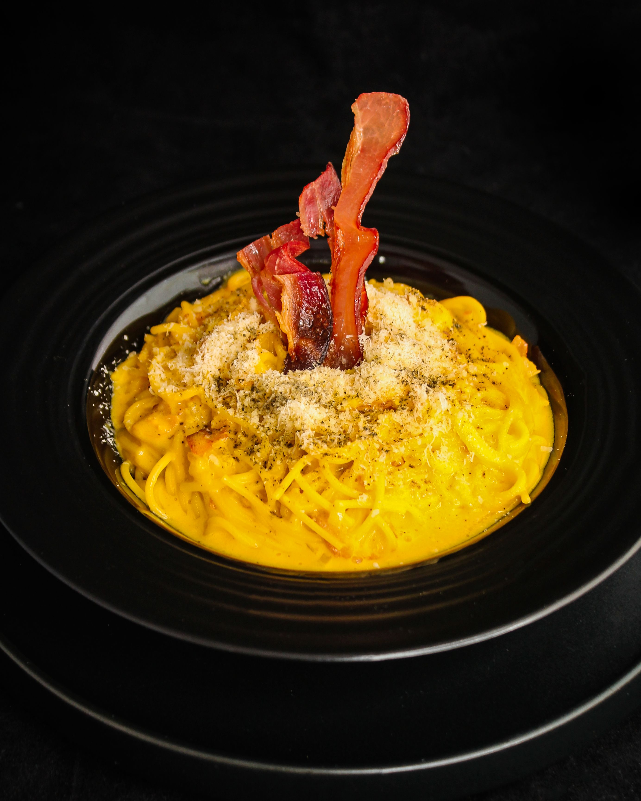

Spaghetti Carbonara

Description
Spaghetti Carbonara is a traditional Roman pasta dish that combines simplicity with incredible flavor. Made with just a few quality ingredients, it creates a rich and creamy sauce without the need for heavy cream.
This authentic recipe features crispy guanciale, creamy egg yolks, and aged Pecorino Romano cheese, delivering a delicious balance of salty, peppery, and savory flavors.
Ingredients
- 400g spaghetti
- 200g guanciale, diced (or pancetta as alternative)
- 4 large eggs
- 100g Pecorino Romano cheese, grated
- 2 cloves garlic, crushed
- Freshly ground black pepper
- Salt for pasta water
Steps
- Bring a large pot of salted water to a boil and cook the spaghetti according to package directions until al dente.
- While the pasta cooks, fry the diced guanciale in a large pan over medium heat until crispy and the fat is rendered, about 5-7 minutes.
- In a bowl, beat the eggs together with most of the grated Pecorino Romano cheese and plenty of freshly ground black pepper.
- When the pasta is cooked, reserve about 1 cup of pasta water before draining.
- Remove the pan with guanciale from heat and let it cool slightly, then add the hot drained spaghetti to the guanciale.
- Pour the egg mixture over the hot pasta and toss continuously, adding pasta water a little at a time until a creamy sauce forms.
- The heat from the pasta will cook the eggs without scrambling them, creating a silky sauce.
- Taste and adjust seasoning with salt and black pepper as needed.
- Serve immediately in warm bowls, garnished with remaining Pecorino Romano cheese and freshly cracked black pepper.
Home